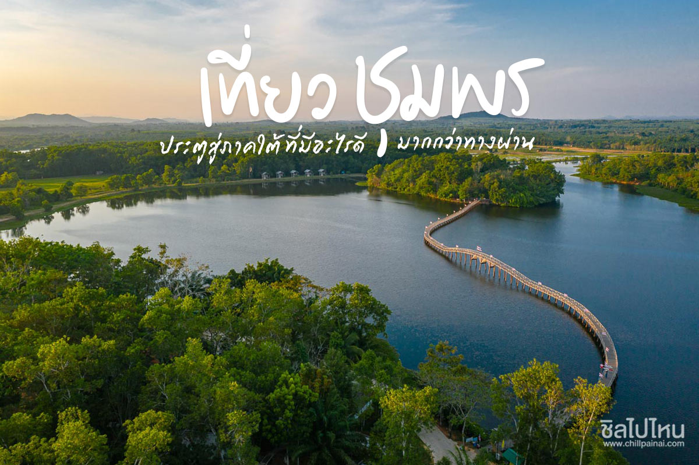
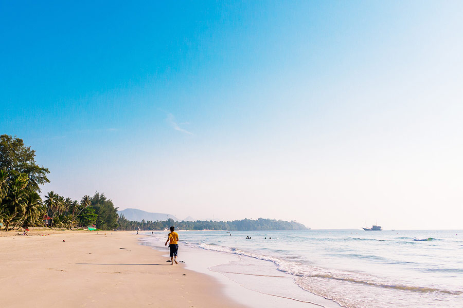
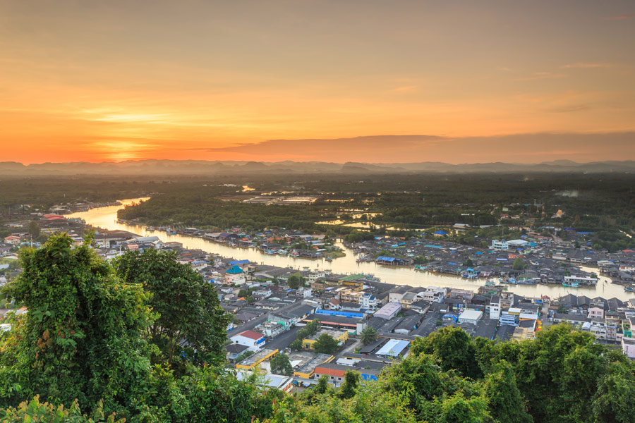
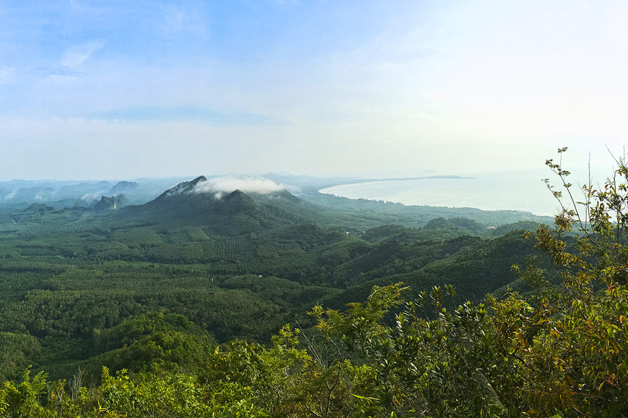
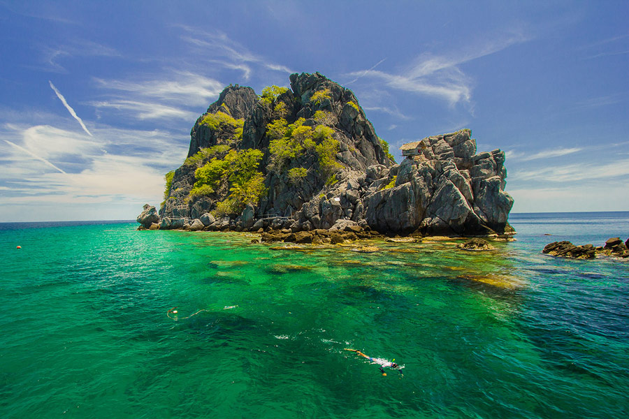
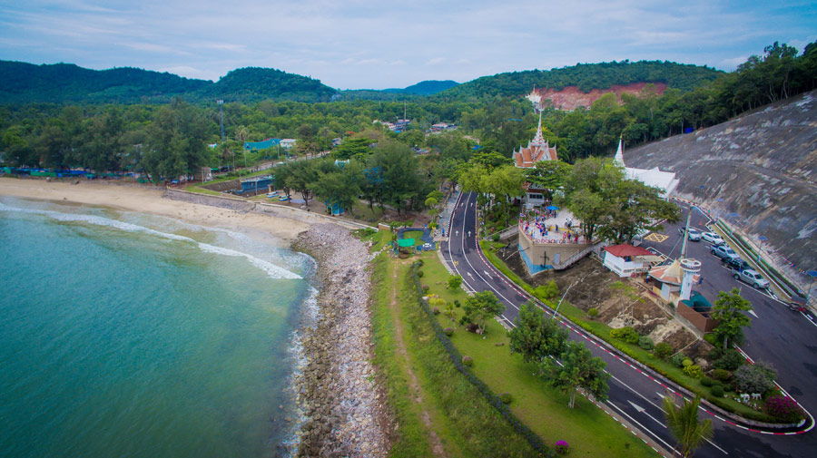
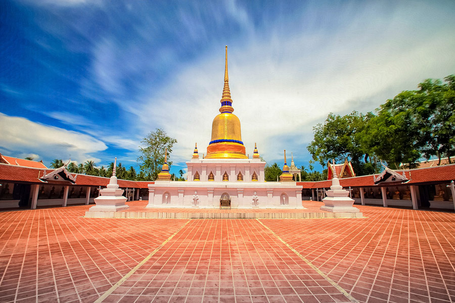
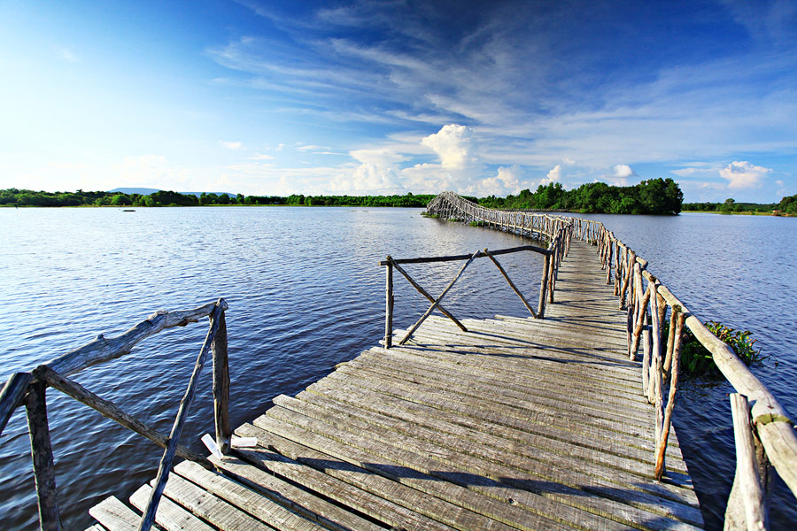

การท่องเที่ยวแห่งประเทศไทย จังหวัดชุมพร 077 502-775-6
(❤ ω ❤) เมืองชุมพร ประตูสู่ภาคใต้ (✿◕‿◕✿)
www.LoveChumphon.com
เมืองชุมพร ประตูสู่ภาคใต้ |
|

|
ชมเมืองชุมพร ประตูสู่ภาคใต้เปิดประตูสู่ภาคใต้ที่ ชุมพร ที่มีทั้งเกาะและชายทะเล และแหล่งดำน้ำชมปะการังที่อุดสมสมบูรณ์ จนมีสโลแกนว่า หาดทรายสวยสี่ร้อยลี้ นอกจากแหล่งท่องเที่ยวทางทะเลแล้ว ชุมพร ยังมีความงดงามในเรื่องของวิถีชีวิตอันเรียบง่ายของหมู่บ้านชาวประมงริมฝั่งที่พร้อมต้อนรับเราให้ไปสัมผัสถึงบรรยากาศพร้อมรับประทานอาหารทะเลสดในราคาไม่แพงถึงถิ่น ไม่ใช่เพียงแค่ทะเลแต่ยังมีสถานที่ท่องเที่ยวทางธรรมชาติ จุดชมทะลหมอกที่สวยงามไม่แพ้ภาคเหนือ เนื่องจากเป็นจังหวัดที่ปลูกกาแฟโรบัสต้ามากที่สุดในประเทศไทย จึงมีอีกสโลแกนคือ ชุมพรหุบเขาแห่งกาแฟ ชุมพรมีดีขนาดนี้ต้องรีบไปเช็คอินให้โลกรู้ |
หาดทุ่งวัวแล่น

ประเดิมที่แรกแบบเอาใจคนรักทะเลด้วยการมุ่งตรงไปยังหาดทุ่งวัวแล่น อันเป็นชายหาดที่สวยงามขึ้นชื่อของจังหวัดชุมพร ชายหาดนี่เม็ดทรายขาวนวลเนียนละเอียดนุ่มเท้ามาก จะโค้งเว้าเป็นรูปพระจันทร์เสี้ยวทอดตัวยาวไปสุดสายตากว่า 3 กิโลเมตร กว้างไกลจนสมัยก่อนวัวสามารถมาวิ่งได้เลย จึงเป็นที่มาของชื่อว่า หาดทุ่งวัวแล่น นอกจากนั้นยังมีต้นมะพร้าวเรียงรายตลอดทาง บรรยากาศเงียบสงบ ไร้เตียงผ้าใบ ไร้สิ่งรบกวนต่างๆ น้ำทะเลใสสะอาด ลงเล่นน้ำได้แบบไม่ต้องกังวลใจ เรียกว่าโลกนี้เป็นของเราจริงๆ ส่วนฝั่งทางด้านใต้ที่ติดกับภูเขาจะเป็นหาดที่มีหินอยู่มากมาย ตรงนั้นจะเป็นแหล่งดำน้ำตื้นดูปะการัง ดอกไม้ทะเล และปลาสวยงามหลายชนิด นักท่องเที่ยวที่ต้องการดำน้ำสามารถเหมาเรือหางยาวตรงเชิงเขาโพธิ์แบะได้ ใครหิวตลอดชายหาดจะมีร้านค้า ร้านอาหาร รีสอร์ท โรงแรม มีที่พักมีให้เลือกหลากหลายสไตล์ให้เราได้พักพิงกินอิ่มนอนอุ่นชมทะเลกันทั้งวันทั้งคืนให้ฉ่ำใจเลย
ที่ตั้ง ตำบลสะพลี อำเภอปะทิว
|
ปากน้ำชุมพร

ปากน้ำชุมพรหรือปากแม่น้ำตะเภาเป็นสถานที่เที่ยวอีกแห่งซึ่งอยู่ห่างจากตัวเมืองประมาณ 13 กิโลเมตร ตรงจุดนี้ถือได้ว่าเป็นแหล่งเศรษฐกิจที่สำคัญของชุมพร เพราะเป็นท่าเทียบเรือประมง มีหมู่บ้านชาวประมงขนาดใหญ่ปลูกบ้านเรือนกันอยู่บริเวณริมปากอ่าว ใช้ชีวิตเรียบง่าย พึ่งพิงท้องทะเลในการทำมาหากินเป็นหลัก ที่นี่จึงเป็นแหล่งท่องเที่ยวทั้งเชิงธรรมชาติและวิถีชีวิต ถ้าอยากช้อปอาหารทะเลสด อาหารทะเลแปรรูปที่ชาวบ้านผลิตเอง หรืออยากกินอาหารทะเลสดใหม่อร่อยราคาไม่แพง ต้องแวะมาที่นี่ มีของขายมากมาย กุ้ง หอยปู ปลา บางครั้งหาซื้อจากเรือประมงได้เลย ผัก ผลไม้ท้องถิ่นก็มี ส่วนทางด้านฝั่งขวาของปากน้ำชุมพรที่ไหลออกสู่ทะเลจะเป็นแนวชายหาดที่ยาวสามารถเดินเล่นหรือนั่งชิลๆ รับลมทะเลได้เหมือนกัน รวมถึงมีรีสอร์ตไว้รองรับนักท่องเที่ยวที่ต้องการพักค้างคืนด้วย นอกจากนี้ หากใครอยากเดินทางไปเที่ยวเกาะต่างๆ ชมความงามทั้งบนบก และใต้ทะเลก็มีเรือพาไปยังเกาะเหล่านั้นได้เลย
ที่ตั้ง ตำบลปากน้ำ อำเภอเมือง
|
เขาดินสอ

เขาดินสอถือเป็นสถานที่ท่องเที่ยวอันซีนของภาคใต้ เป็นยอดเขาสูงสุดในเขตอำเภอปะทิว สูงกว่าระดับน้ำทะเลประมาณ 736 เมตร ตั้งอยู่ระหว่างท้องทะเลกับเทือกเขาตะนาวศรี เหมาะสำหรับผู้ที่ชอบเดินป่าผจญไพรศึกษาธรรมชาติ ใช้เวลาเดินกันราวๆ ชั่วโมงผ่านป่าและพันธุ์ไม้เฉพาะถิ่นใต้ก็จะถึงยอดเขาซึ่งจะเป็นจุดชมวิวที่มองเห็นทิวทัศน์กว้างไกลสุดลูกหูลูกตาแบบพาโนรามา เต็มอิ่มกับวิวจริงๆ มองทางไหนก็สวยไปหมด ทั้งท้องทะเล ชายหาดทุ่งวัวแล่น เรือกสวนไร่นา สวนผลไม้ สวนยางพารา รวมถึงเทือกเขาก็มีให้ชมด้วย ลมเย็นสบาย อากาศดีทีเดียว และไม่ต้องกังวลว่าจะเดินขึ้นไปไม่ถึงเพราะระหว่างทางจะมีศาลาให้เราได้นั่งพักเหนื่อยเป็นระยะๆ ไฮไลท์อีกอย่างของที่นี่คือเป็นแหล่งดูนกเหยี่ยวติดอันดับ 1 ใน 5 ของโลก ในช่วงเดือนกันยายนถึงพฤศจิกายนของทุกปีสามารถเห็นนกเหยี่ยวหลายสายพันธุ์อพยพย้ายถิ่นมาจากทางประเทศจีนบินวนเวียนเป็นแสนๆ ตัวบริเวณนี้อย่างสวยงาม โดยเฉพาะช่วงเย็นที่นกเหยี่ยวบินร่อนต่ำลงมาทำให้มองเห็นได้อย่างชัดเจน ซึ่งทุกๆ ปีราวๆ เดือนตุลาคมจะมีการจัดเทศกาลดูนกเหยี่ยวอพยพมีที่เดียวในประเทศไทย เป็นกิจกรรมที่ได้รับความสนใจจากนักดูนกและนักท่องเที่ยวทั้งในประเทศและต่างประเทศเป็นจำนวนมาก ใครได้เห็นต้องบอกว่า เป็นความมหัศจรรย์ทางธรรมชาติที่ยากจะลืมเลือน แถวๆ เขาดินสอยังมีลานกางเต้นท์พักแรมได้ แต่สิ่งอำนวยความสะดวกยังไม่ค่อยครบครันเท่าไหร่
ที่ตั้ง ตำบลบางสน อำเภอปะทิว
|
อุทยานแห่งชาติหมู่เกาะทะเลชุมพร

อุทยานแห่งชาติหมู่เกาะทะเลชุมพรประกอบไปด้วยเกาะเล็กเกาะน้อยเรียงรายรวมกันมากกว่า 40 เกาะ แต่ละเกาะล้วนเต็มไปด้วยความงดงามทางธรรมชาติที่แตกต่างกันไป บางเกาะมีหาดทรายขาวเนียนละเอียด บางเกาะเป็นภูเขาหินปูน เกาะที่นักท่องเที่ยวนิยมไปกันคือ เกาะง่ามใหญ่ เกาะง่ามน้อย เกาะกะโหลก เกาะทะลุ เกาะหลักแรด เกาะมะพร้าว เกาะมาตรา ส่วนเกาะที่นักท่องเที่ยวชอบมาดำน้ำกันมากคือ เกาะลังกาจิว ที่นี่ฝูงปลา ปะการังหลากสี ดงดอกไม้ทะเลเพียบๆ บางครั้งในช่วงหน้าร้อนอาจได้ชมโฉมฉลามวาฬอีกด้วย นับว่าเป็นใต้ท้องทะเลที่สวยงามสมบูรณ์มากอีกแห่งและเป็นสวรรค์ของนักดำน้ำดีๆ นี่เอง ที่นี่ไม่เพียงแค่เหมาะกับการดำน้ำตื้น ดำน้ำลึกเท่านั้น แต่ยังเป็นแหล่งท่องเที่ยวเชิงอนุรักษ์ที่สามารถทำกิจกรรมสนุกสนานได้หลากหลาย ไม่ว่าจะเดินชมป่าชายเลนตามเส้นทางที่เป็นสะพานไม้ทอดยาว หรือพายเรือคายัคท่องป่าชายเลนอย่างใกล้ชิดก็สามารถทำได้หมด เป็นอีกหนึ่งสถานที่ที่ได้รับความนิยมเป็นอย่างมากทั้งชาวไทยและต่างประเทศ
ที่ตั้ง ตำบลหาดทรายรี อำเภอเมือง
|
หาดทรายรี/ศาลกรมหลวงชุมพรเขตอุดมศักดิ์

หาดทรายรีเป็นชายหาดที่มีชื่อเสียงอีกแห่งของชุมพร หาดสวย น้ำใส ท้องฟ้าแจ่ม แนวชายหาดทอดตัวยาวไปตามโค้งอ่าวอย่างสวยงาม และเป็นสถานที่สำคัญทางประวัติศาสตร์ของเมืองชุมพรและประเทศไทยด้วย เนื่องจากบริเวณนี้เป็นสถานที่สิ้นพระชนม์ของพลเรือเอก พระเจ้าบรมวงศ์เธอ กรมหลวงชุมพรเขตอุดมศักดิ์ หรือเสด็จเตี่ย องค์พระบิดาแห่งกองทัพเรือ หลังจากการสิ้นพระชนม์ของพระองค์ได้มีการสร้างอนุสรณ์สถานเพื่อรำลึกถึงพระองค์ขึ้นบนเนินเขาทางทิศเหนือของหาดทรายรี เป็นศาลกรมหลวงชุมพรที่ใหญ่ที่สุดในประเทศไทย โดยจำลองบริเวณจุดตั้งศาลเป็นเรือรบขนาดใหญ่มีอาวุธยุทโธปกรณ์เสมือนจริง นอกจากนั้นตรงจุดนี้ยังป็นจุดที่มองทิวทัศน์ของหาดทรายรีได้ชัดเจนและสวยงามด้วย สิ่งสำคัญที่ห้ามพลาดของคนชอบชมวิวชอบถ่ายรูปอีกอย่างคือ ระหว่างทางไปหาดทรายรีจะมีจุดชมวิวเขามัทรีที่สวยสุดๆ แบบสามารถมองเห็นเมืองชุมพรได้ครบ 360 องศากันเลยทีเดียว แวะไปเที่ยวกันอีกได้
ที่ตั้ง ตำบลหาดทรายรี อำเภอเมือง
|
วัดพระธาตุสวี

วัดเก่าแก่คู่เมืองชุมพรและเป็นที่ตั้งโบราณสถานที่สำคัญคือ องค์พระบรมธาตุสวีซึ่งภายในบรรจุพระบรมสารีริกธาตุ โดยมีลักษณะสถาปัตยกรรมเป็นทรงระฆังคว่ำคล้ายกับพระบรมธาตุเมืองนครศรีธรรมราชแต่มีขนาดเล็กกว่า สันนิษฐานว่าสร้างขึ้นสมัยกรุงศรีอยุธยามีอายุกว่า 700 ปี แต่ปัจจุบันองค์พระบรมธาตุได้มีการบูรณะใหม่โดยใช้กระเบื้องโมเสกปิดองค์พระเจดีย์แต่ยังคงรูปทรงเดิมไว้ และมีการสร้างกำแพงแก้วรอบองค์พระบรมธาตุด้วย บริเวณศาลาที่ล้อมรอบพระบรมธาตุจะประดิษฐานไปด้วยพระพุทธรูปปางประทานพรทั้งสี่ด้านจำนวน 108 องค์ซึ่งกรมศิลปากรได้ขึ้นทะเบียนเป็นโบราณสถานเรียบร้อยแล้ว ส่วนด้านหน้าพระบรมธาตุสวีจะมีศาลทรงไทยหลังคาจั่วมุงกระเบื้องดินเผาเคลือบ ภายในมีรูปปั้นคนนั่งขนาดเท่าคนจริง ชาวอำเภอสวีเรียกว่า ศาลพระเสื้อเมือง สร้างขึ้นเพื่อช่วยดูแลรักษาพระบรมธาตุ ซึ่งเป็นที่เคารพนับถืออย่างมากทั้งจากชาวไทยและชาวจีน วัดนี้เป็นวัดที่สะอาดเงียบสงบไม่ค่อยมีการค้าขายสินค้าหรือวัตถุบูชาต่างๆ สักเท่าไหร่นัก เข้าไปแล้วเลยรู้สึกสงบร่มเย็น เมื่อไหว้พระขอพรกันเสร็จสรรพสามารถเดินทางไปเที่ยวต่อยังหมู่บ้านม้าน้ำหรือหมู่บ้านท้องตมใหญ่แหล่งท่องเที่ยวอีกแห่งได้อีกด้วย
ที่ตั้ง ตำบลสวี อำเภอสวี
|
โครงการพัฒนาพื้นที่หนองใหญ่ตามแนวพระราชดำริ

โครงการพัฒนาพื้นที่หนองใหญ่ตามแนวพระราชดำริเป็นศูนย์การเรียนรู้และพิพิธภัณฑ์ที่มีชีวิต หลายคนเรียกพื้นที่ธรรมชาติกว้างใหญ่แห่งนี้ว่า แก้มลิงหนองใหญ่ อันเกิดจากการที่พระบาทสมเด็จพระปรมินทรมหาภูมิพลอดุลยเดชทรงให้สร้างเส้นทางเดินน้ำเพื่อพักน้ำไว้ในแก้มลิง ไม่ให้เกิดน้ำท่วมใหญ่อย่างที่จังหวัดชุมพรเคยประสบมาโดยตลอด หลังจากนั้นชาวชุมพรได้ร่วมแรงร่วมใจสานต่อพระราชดำริในเรื่องเศรษฐกิจพอเพียง ด้วยการสร้างศูนย์ความรู้โครงการหนองใหญ่ขึ้นมา เพื่อเป็นแนวทางในการดำเนินชีวิตให้กับบุคคลที่สนใจได้มาเรียนรู้และนำไปประกอบอาชีพ ภายในพื้นที่ 3,000 ไร่ของโครงการแบ่งออกเป็น 3 ส่วนด้วยกัน คือ ส่วนของป่าธรรมชาติ ซึ่งเป็นที่อยู่อาศัยของหมู่นกหลากหลายพันธุ์ ส่วนของการทำการเกษตรซึ่งมีพื้นที่ประกอบอาชีพจริง แปลงนา แปลงสมุนไพร การทำไบโอดีเซล การเลี้ยงกบ ปลา ไก่ หมู โดยเปิดให้เกษตรกร บุคคลทั่วไป นักเรียน นักศึกษา เข้ามาหาความรู้ได้ และส่วนสุดท้ายคือ ส่วนของเกาะเลข 9 ในส่วนนี้เป็นไฮไลต์ของการมาเที่ยวที่นี่ มีการจำลองโฮมสเตย์บ้านคลองเรือให้มาพักได้จริงไว้คอยรองรับนักท่องเที่ยวด้วย บรรยากาศที่นี่ร่มรื่นเงียบสงบมาก เหมาะเป็นสถานที่พักผ่อนหย่อนใจ เรียนรู้วิถีเกษตร และศึกษาเส้นทางธรรมชาติเป็นอย่างยิ่ง
ที่ตั้ง ตำบลปากคลอง อำเภอประทิว
|
ที่กินดื่มเมืองชุมพร• ร้านกาแฟถ้ำสิงห์ เมืองชุมพรขึ้นชื่อว่าเป็นเมืองกาแฟ มีร้านกาแฟรสชาติและบรรยากาศดีหลายร้าน เช่น ร้านกาแฟถ้ำสิงห์ที่ตั้งอยู่บริเวณจุดชมวิวเขามัทรี เป็นกาแฟชุมพรของแท้อันเกิดจากผลผลิตของวิสาหกิจชุมชน มาที่นี่จ่ายตังค์ดื่มกาแฟหลักร้อยแต่ได้ของแถมเป็นวิวทะเลหลักล้าน และมีแปลงสาธิตการปลูกกาแฟให้ชมด้วย • Old Time Cafe คาเฟ่ดังของเมืองชุมพร เมนูอร่อยมีทั้ง อาหาร ของว่าง เบเกอรี่ และเครื่องดื่ม • Flow Cafe ร้านกาแฟสุดฮิป บรรยากาศดีประจำเมืองชุมพร นอกจากกาแฟแล้วยังมีอาหารนานาชาติให้ลิ้มชิมรสด้วย • ร้านกาแฟขี้ชะมด ตั้งอยู่โครงการพัฒนาส่วนพระองค์ กาแฟดี บรรยากาศดี สมคำร่ำลือ • ร้านข้าวแกงน้องไนท์ อาหารอร่อย รสชาติจัดจ้าน มีอาหารประเภทต้มแกงผัดทอดกว่า 20 รายการให้เลือก ที่ต้องลองคือ แกงไตปลา แกงส้ม กินคู่กับปลาทอดนานาชนิด • ร้านอาหารลุย ร้านเก่าแก่ของเมืองชุมพร ขายอาหารซีฟู้ดและอาหารปักษ์ใต้ของแท้ เมนูแนะนำ ปูเนื้อผัดผงกะหรี่วุ้นเส้น หมึกผัดหวาน เอ็นหอยผัดพริกไทยดำ แกงส้มปลากระบอก • ร้านจันจิรา อาหารทะเลและอาหารไทยรสชาติอร่อยราคาไม่แพง ร้านอยู่ริมทะเลแถวตำบลปากน้ำ เมนูเด็ด แกงส้มปูไข่หน่อไม้ดอง หมึกไข่นึ่งมะนาว • ร้านพริกหอม ขายอาหารไทยสไตล์ปักษ์ใต้ เมนูน่าลอง สะตอผัดกะปิกุ้ง ปลาอินทรีย์ทอดราดน้ำปลา ทอดมันปลากราย ฯลฯ • ร้านยายปวด เป็นร้านอาหารพื้นบ้านรสชาติแบบใต้แท้ๆ อร่อยมาก ใบเหลียงผัดไข่ ผัดสะตอกุ้ง แกงส้มยอดมะพร้าว ปลาอินทรีย์ทอดเกลือ • ร้านครัวลุงอ้วน อยู่แถวอำเภอสวี ขายอาหารซีฟู้ด บรรยากาศชายทะเลที่ไม่ควรพลาด • ร้านโรตีฟารีดา มีทั้งข้าวหมกไก่ น้ำชา โรตีแบบคาวและหวานให้เลือกลิ้มชิมรส อยู่ปากซอยกรมหลวงชุมพร 1 • ก๋วยเตี๋ยวท้าพิสูจน์ เมนูเด็ด ก๋วยเตี๋ยวต้มยำทะเล ก๋วยเตี๋ยวต้มยำกระดูกอ่อน
“ฉันคิดถึงชุมพรอ่ะแก อยากกลับไปชุมพร”
|
|
การท่องเที่ยวแห่งประเทศไทย จังหวัดชุมพร 077 502-775-6 (❤ ω ❤) เมืองชุมพร ประตูสู่ภาคใต้ (✿◕‿◕✿) www.LoveChumphon.com |